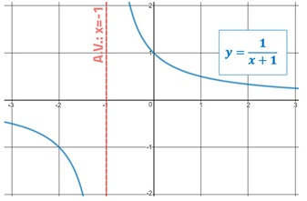
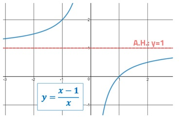

Para encontrar las asíntotas verticales igualamos el denominador a cero, y encontramos las soluciones o ceros. Gráfica:

Asíntotas Horizontales (A.H.)
Para encontrar las asíntotas horizontales necesitamos comparar el grado del numerador (GN) y con el grado del denominador (GD).
Si GN > GD, hay asíntota horizontal en y = 0
Si GN = GD, hay asíntota horizontal en y = CPN/CPD
Si GN > GD, no hay asíntota horizontal.
Donde, CPN es el coeficiente principal del numerador; y CPD es el coeficiente principal del denominador. Gráfica:

Asíntotas Oblicuas (A.O.)
Solo hay asíntota oblicua o diagonal, si es que no hay asíntotas horizontales y GN - GD = 1. La asíntota oblicua es el cociente de la división entre P(𝓍) y Q(𝓍). Gráfica: